A S.O.S. Café depende da sua generosidade para continuar garantindo o "Kit Deploy" e o café quentinho para os programadores voluntários. Escolha a melhor forma de apoiar nossa causa:
Doação instantânea, segura e sem taxas.
**Chave Pix (CNPJ):** 00.000.000/0001-00
Ajude com seu cartão ou torne-se um padrinho/madrinha com doações mensais recorrentes.
Doar com Cartão (Parcelado) Apoio Mensal RecorrenteAgência: 0001 | Conta: 12345-6 | Banco: 001 - Exemplo S.A.
Nossa iniciativa conta com a colaboração de diversas empresas comprometidas com a responsabilidade social e o impacto positivo na comunidade. Cada empresa parceira ajuda a transformar doações em projetos reais, beneficiando diretamente pessoas e causas que precisam de apoio. A participação dessas empresas não é apenas financeira: elas também contribuem com voluntariado, campanhas de conscientização e apoio logístico, fortalecendo o vínculo entre o setor privado e a sociedade. Junte-se a nós e faça parte desse movimento de solidariedade!


 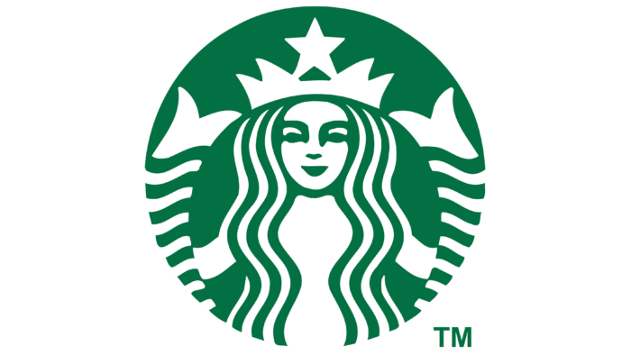
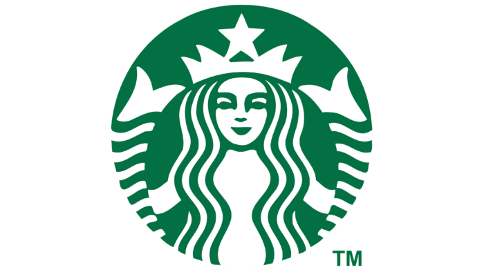
 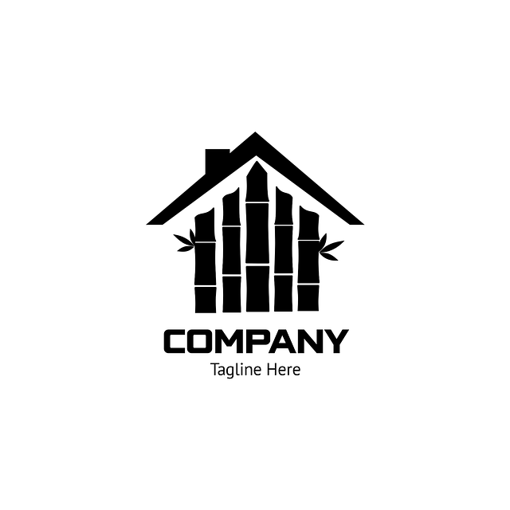
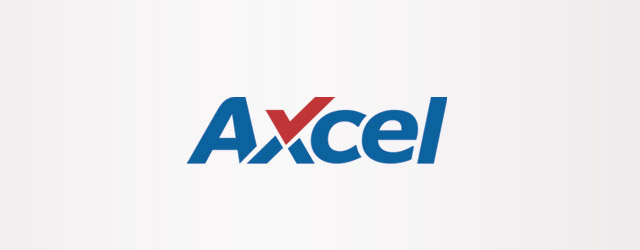
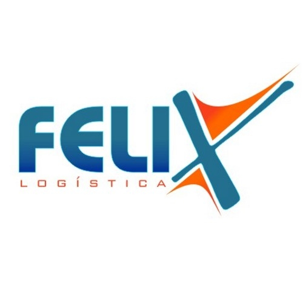
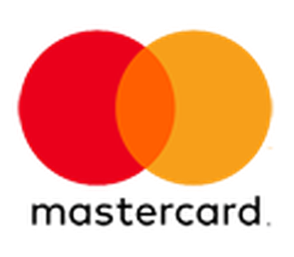
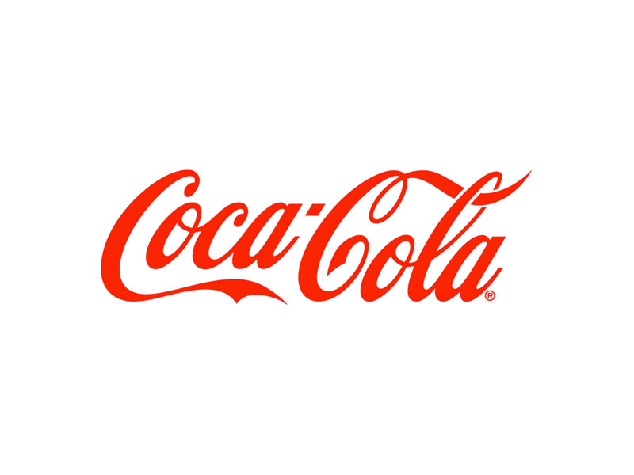
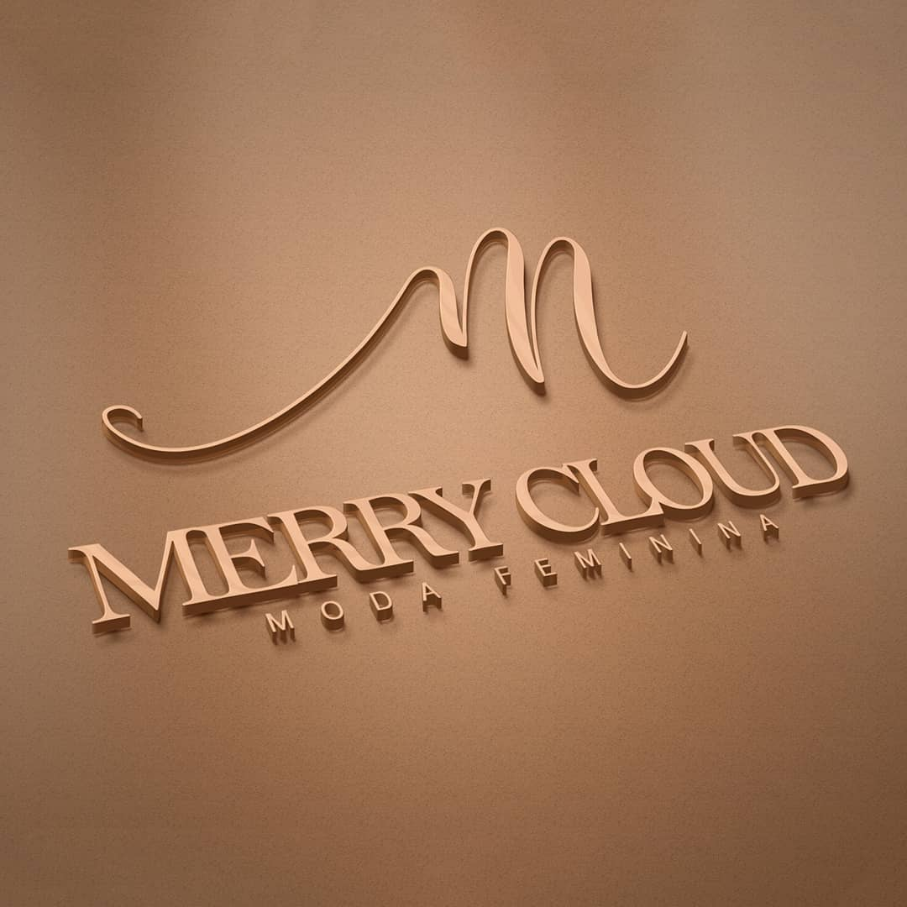
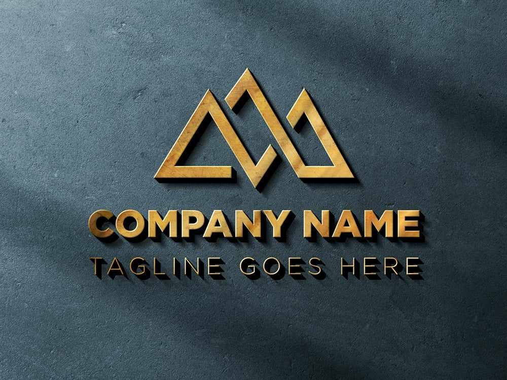
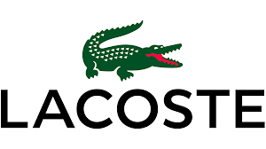
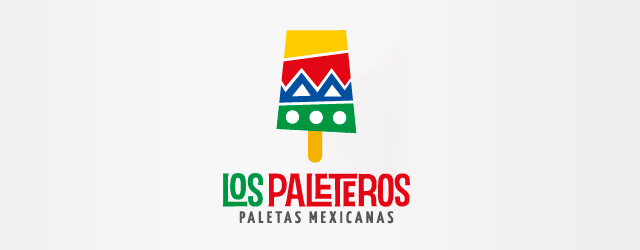
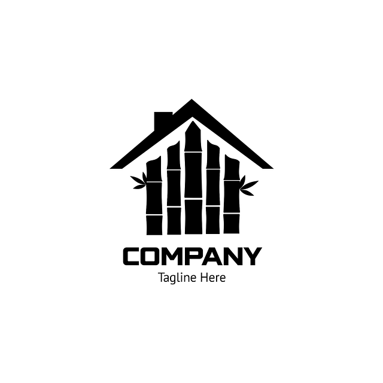
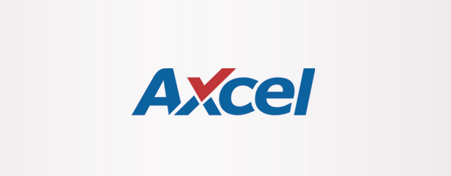
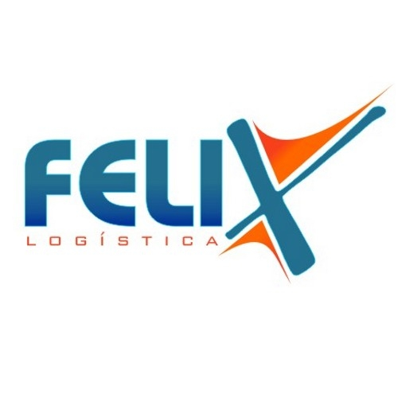
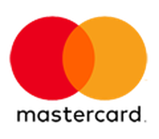
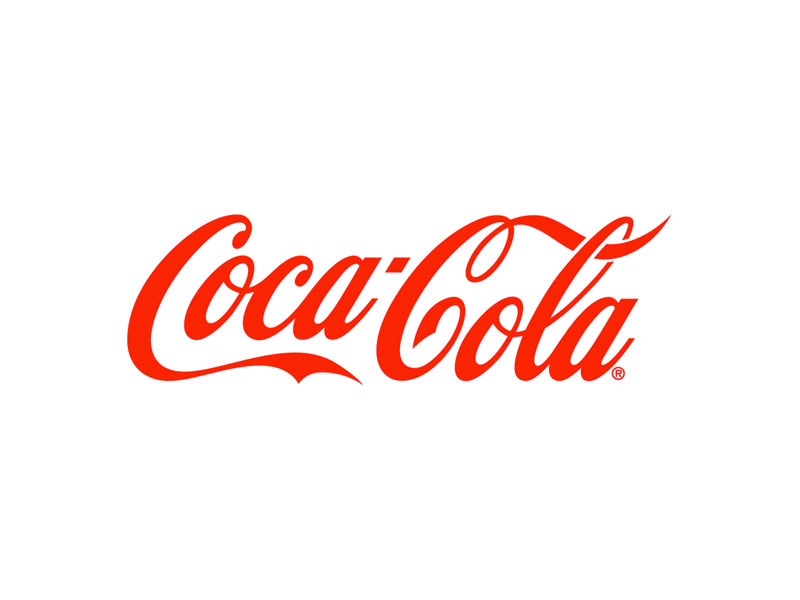
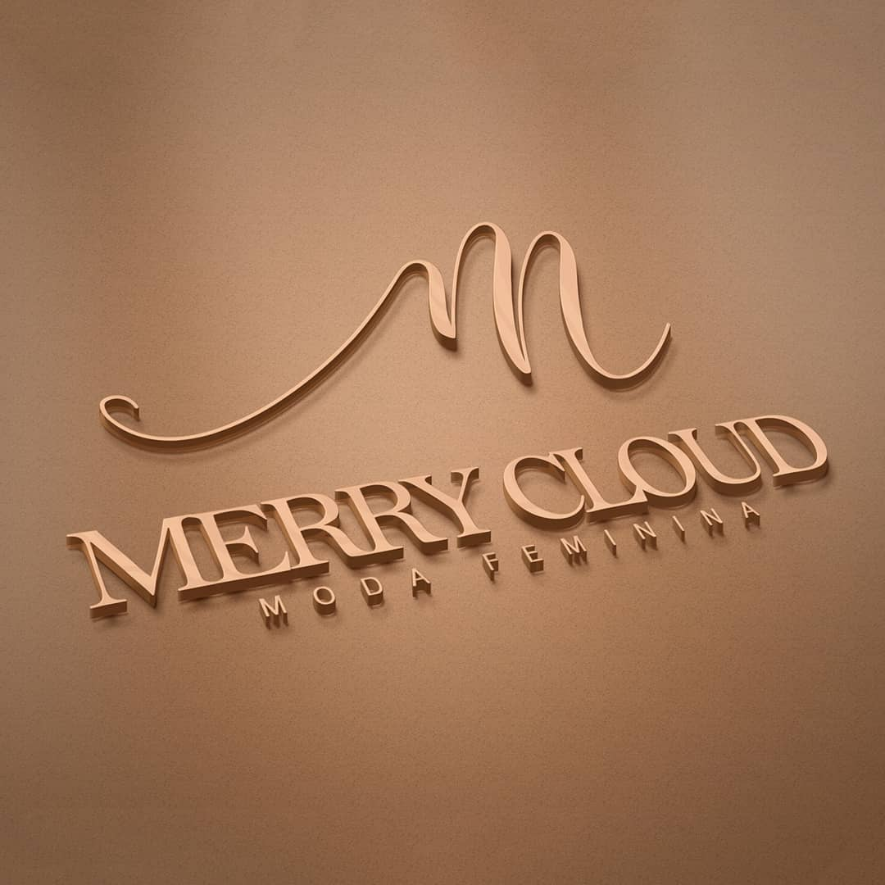
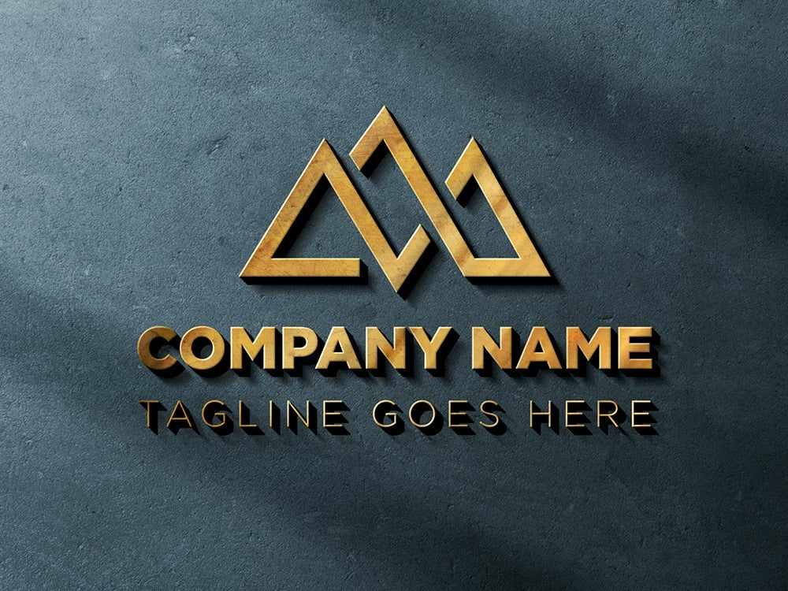
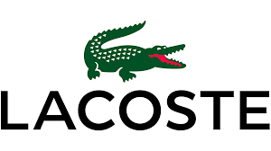
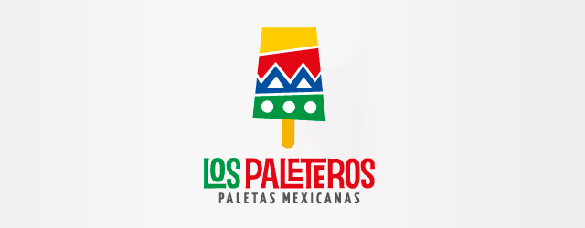
Quem acredita na causa e ajuda o S.O.S. Café a transformar energia em solidariedade.
“Apoiar o S.O.S. Café é minha forma de agradecer à comunidade tech.”
— Claudia, Desenvolvedora Front-end
“Cada café compartilhado é uma linha de código de amor!”
— Ricardo, CEO
“Ver o impacto real de um simples gesto é o que me motiva.”
— Camila Rocha, Gerente de Projetos